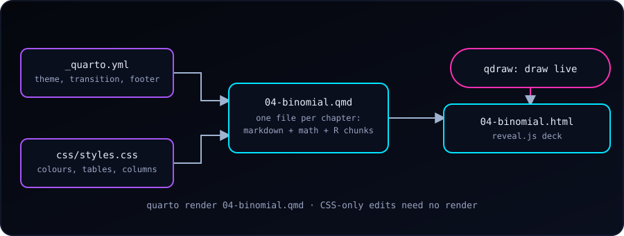
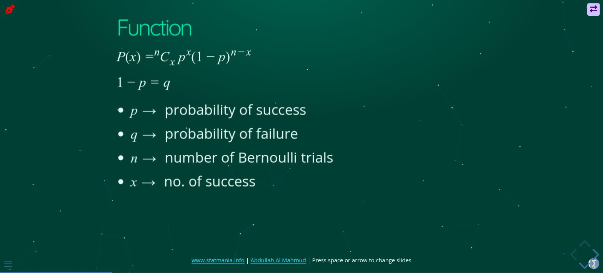

Statistics slides need three things at once: readable text, real math, and numbers that are actually correct. After trying the usual slide tools, I settled on Quarto with reveal.js. Each chapter is one plain-text file; math is LaTeX, tables and plots come from R code, and the result is a web page that opens anywhere. This post shows the setup behind the Stat Mania lecture slides, so we can build the same thing.

Why Quarto + reveal.js
- Plain text. A deck is a
.qmdfile, so it works with git, diffs and any editor. - Math just works.
$\binom{n}{x}p^x(1-p)^{n-x}$renders crisply at any size. - Code lives next to the slide. An R chunk computes the table, so the numbers cannot drift from the explanation.
- It is a web page. Students open a link on a phone; nothing to install.
- One look for every deck, from a single config and stylesheet.
The Layout: One Config, Many Decks
All the lecture files sit in one folder that is a small Quarto project:
slide/
_quarto.yml # shared settings for every deck
css/styles.css # the theme
js/starfield-bg.js # optional animated background
01-stat-intro.qmd
04-binomial.qmd
06-correlation-regression.qmd
…The shared _quarto.yml holds everything a deck should have in common, so each chapter file stays short:
project:
type: website
output-dir: . # the .html lands next to its .qmd
format:
revealjs:
theme: sky
transition: convex
slide-number: c/t # "current / total"
navigation-mode: vertical
incremental: true # bullets appear one at a time
highlight-style: dracula
css: css/styles.css
footer: '<a href="https://www.statmania.info">statmania.info</a> | Press space or arrow to change slides'
revealjs-plugins:
- qdraw # draw on slides while teachingincremental: true is the setting I like most for lectures: every bullet list reveals one point per key press, so students do not read ahead of the explanation.
A chapter file then needs only a few lines of front matter:
---
title: "Binomial Distribution"
author: Your Name
format: revealjs
---Writing Slides
The structure is just headings: # starts a section (a title slide) and ## starts a slide.
# Concept
- Success or failure
- Detecting a disease is a success
## Function
$P(x) = \binom{n}{x} p^x (1-p)^{n-x}$
- $p$: probability of success
- $n$: number of trialsA few patterns cover most of what a statistics lecture needs.
Pause for a question. . . . (three spaced dots) hides everything below until the next key press. It is perfect for “what is the answer?” slides:
## Answer on click
What is P(X = 2) for n = 5, p = 0.3?
. . .
```{r}
dbinom(2, 5, 0.3)
```Compute, do not copy. Mark a chunk echo: false to show only its output. The table on the slide is then produced by the same code that would give the answer in an exam:
```{r}
#| echo: false
x <- 0:5
round(dbinom(x, 5, 0.3), 3)
```Two columns: text beside a table or plot.
::: {.columns}
::: {.column width="45%"}
(left: a table or plot)
:::
::: {.column width="55%"}
- n = 5, p = 0.3
- What do we see?
:::
:::Tabs for R versus Python (or “formula versus code”) on a single slide:
::: {.panel-tabset}
### R
```r
dbinom(2, 5, 0.3)
```
### Python
```python
from scipy.stats import binom
binom.pmf(2, 5, 0.3)
```
:::Small utilities. ## Title {.smaller} shrinks the text on a crowded slide. ## Title {background-color="white"} gives a slide a white background, useful for a plot or an image with its own white page. ## Title {visibility="hidden"} keeps a draft slide in the file but leaves it out of the rendered deck, so it never reaches the audience.
A Theme That Works for Teaching
reveal.js ships with themes (I start from sky), then css/styles.css restyles everything with a handful of CSS variables:
:root{
--sm-bg: #0b3d34; /* deep teal */
--sm-cyan: #00e5ff;
--sm-green: #2dd4a7;
--sm-text: #e6f7f2;
}One decision came from live teaching. The background is a deep teal rather than near-black. The qdraw pen (below) draws in black by default, and on a black background the ink was invisible. A dark-but-not-black background keeps the mood and keeps the pen readable. A small script (starfield-bg.js, added with include-after-body:) draws a calm animated starfield behind the slides; it is optional.
The stylesheet is a linked file, not baked into each deck. So when I only change colours, spacing or table styles, I do not need to re-render any slides; a browser refresh shows the change on all decks.
Drawing on Slides
Circling a term, sketching a normal curve or underlining a step is much of teaching. qdraw is a small Quarto extension that adds a pen, shapes and an eraser on top of any reveal.js slide. It is one line in _quarto.yml (revealjs-plugins: [qdraw]) after installing it with quarto add. I wrote about its newer features in What’s New in qdraw.
Render, Check, Publish
Rendering one deck is one command from the slides folder:
quarto render 04-binomial.qmdBecause output-dir: ., the HTML appears next to the source, ready to commit. Publishing is then the usual: add the files, commit, push, and the static host serves them. While presenting, the built-in keys help: space or the arrow keys to move, o for an overview of all slides, f for full screen, and ? for the list of shortcuts. To hand out a PDF, open the deck with ?print-pdf added to the address and use the browser’s Print to PDF.
Habits That Save Time
- One chapter, one file. Short files render in seconds and are easy to reorder.
- Keep shared choices in
_quarto.ymland the CSS, never repeated in decks. - Use sections (
#) so students can navigate a long chapter by topic. - Let code produce the numbers. If an example changes, the slide updates itself.
- Hide drafts with
visibility="hidden"instead of commenting them out.
Start Your Own
- Install Quarto and create a folder with a
_quarto.ymllike the one above. - Add
01-intro.qmdwithformat: revealjsand a few##slides. - Run
quarto render 01-intro.qmdand open the HTML. - Move repeated settings into
_quarto.ymlandcss/styles.cssas the second deck shows you what to share.
Slides stay small and boring in the best way: Markdown for words, LaTeX for math, R for numbers, and one stylesheet for the look.